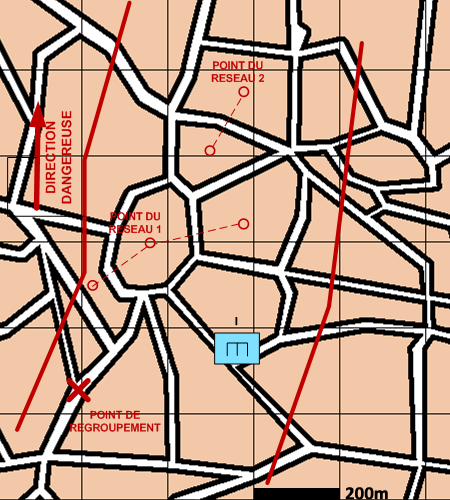

NIVEAU :Automate
ARME :
MISSION :Desactiver Point Du Reseau
Objectif principal
- Désactiver
Modalités d'exécution
-
Distribuer les chantiers aux pions ;
-
Procéder à la désactivation des points du réseau ;
-
Rejoindre le point de regroupement une fois les travaux terminés.
Schéma de modélisation

Paramètres obligatoires
Fuseau : Zone de responsabilité.
Point de regroupement : Le point à rejoindre en fin de mission.
Reseau de ressource
Types de ressource :
les types de ressource à désactiver pour le point de réseau sélectionné.
Paramètres optionnels